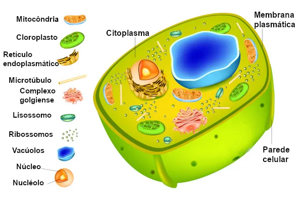

O citoplasma é a parte da célula que fica entre a membrana plasmática e o núcleo, composto por um gel chamado citosol. É onde acontecem a maioria das reações metabólicas e onde ficam armazenadas as organelas. O citoplasma fornece suporte estrutural e ajuda na movimentação das organelas.

Além de participar de reações químicas vitais, o citoplasma é essencial para o transporte de substâncias dentro da célula e na regulação do ambiente celular.